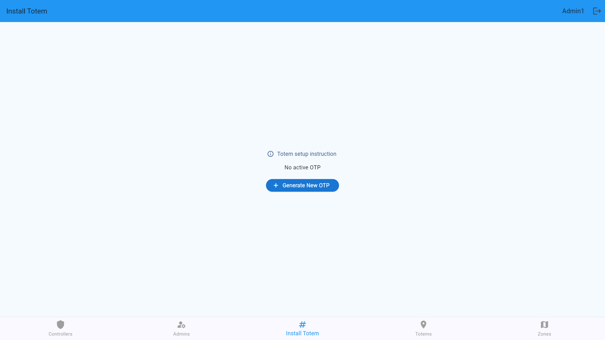
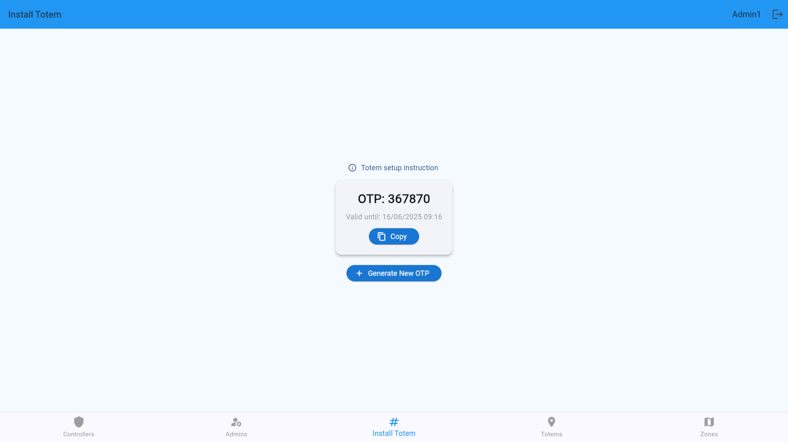
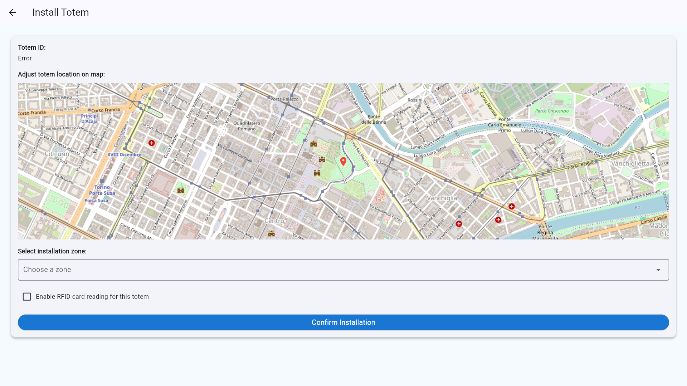
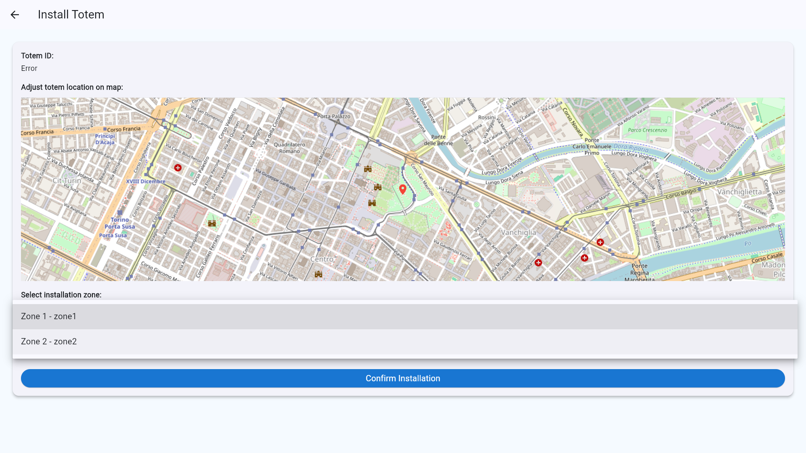
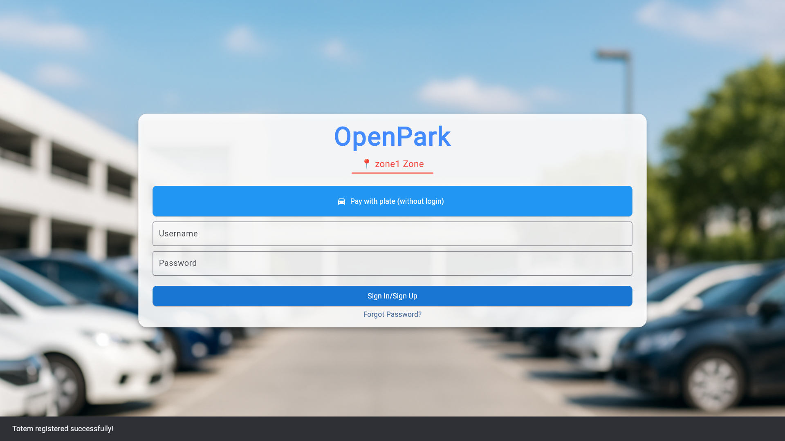
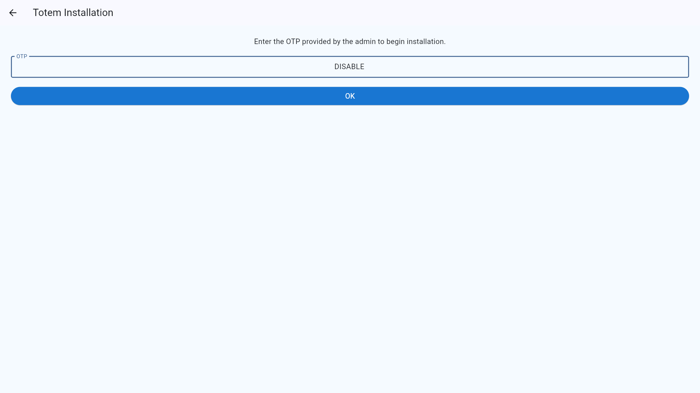
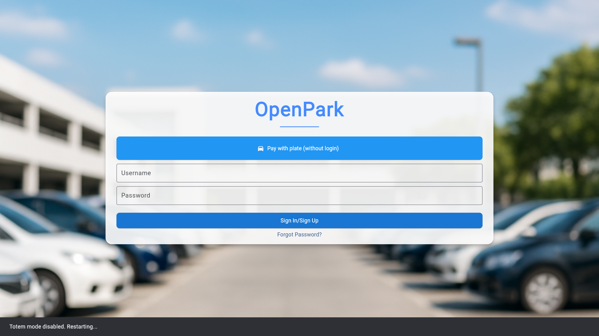
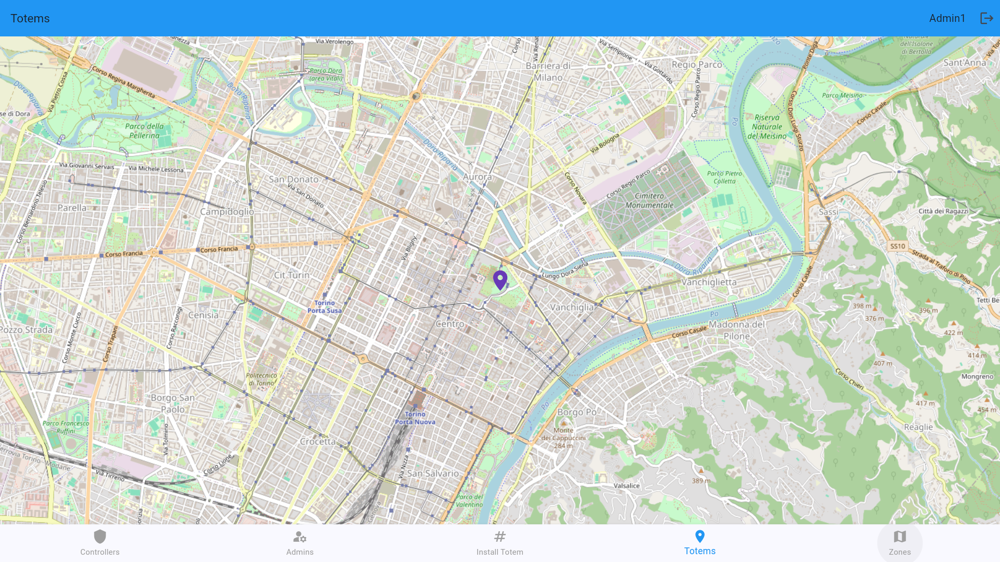

🏪 Totem Guide
🧾 Overview
The Totem is a self-service, automated parking ticket vending machine designed to offer users a fast, intuitive, and app-free ticketing experience in designated parking zones. Totems are especially helpful for visitors and non-registered users who prefer not to use mobile apps for parking.
The Totem provides a contactless, account-free alternative for purchasing tickets.
A Totem is a smart, touch-enabled kiosk or terminal installed in parking zones. It connects directly to the parking management system and allows users to:
- Purchase parking tickets
- Make payments via contactless cards
- Interact with the system without needing an app or account
Totems are ideal for guest users and tourists and support inclusive access for non-digital users.
⚙️ Totem Configuration (Admin Setup)
🔐Admins can generate time-limited OTP (One-Time Password) tokens to securely install Totem throughout the application and enable users or guests to pay on it without the need to access the application.
🏗️ How to Generate OTP and Install Totem:
- Press Generate New OTP if there is no OTP available. 
- Copy the generated OTP code 
- Logout and press the Forgot Password? on the login page.
- Enter "0" in the Email field to open the OTP install mode.

- Enter the OTP code in the OTP field.
- Press OK
- Select position on the map and zone to install Totem.


Enable RFID reader will change the way of payment in the application, so you can enable it if you want to use RFID card to pay on Totem.
At this time, the login interface changes, indicating that totem has been successfully installed.

Totem can be uninstalled in the OTP install mode. Input "DISABLE" in the OTP field and press OK to uninstall Totem.
 
🗺️ Admin can view all Totems
Real-time map of all active Totems: 
🛠️ Using the Totem (User Guide)
The usage of the totem is almost entirely the same as app usage, with the difference that that the zone is selected automatically based on the Totem's location. RFID contactless cards can be used for payment if the RFID reader is enabled.